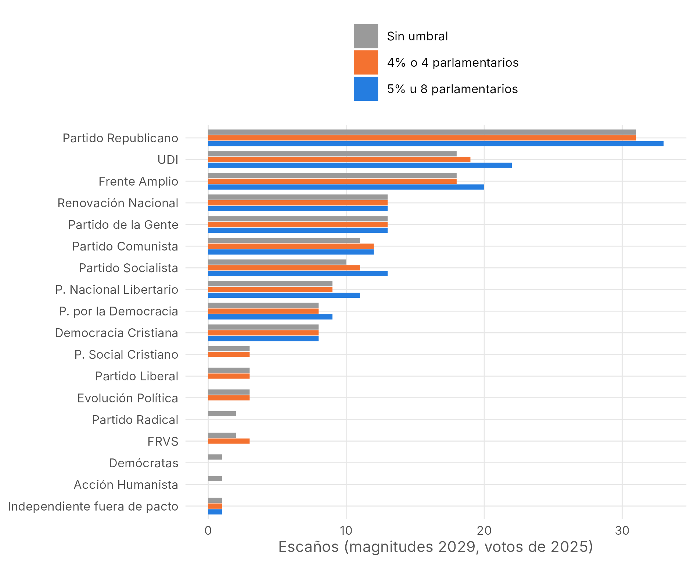

Same votes, a different Chamber: the reallocation of seats after the 2024 Census and its effects on representation and voting thresholds
In April 2026, Chile's Electoral Service (SERVEL) updated, for the first time, the allocation of the 155 seats of the Chamber of Deputies across its 28 districts, using 2024 Census population. Resolution O-129 moves ten seats, seven of them to the Santiago Metropolitan Region, and applies from the 2029 legislative election.
This working paper asks what changes with that reallocation if votes are held constant. It separates the mechanical effect of the new rule, the only one attributable to the resolution, from the changes in candidacies, alliances and preferences the next election will bring. This entry summarises the findings; the full paper develops the theoretical framework, the method and the limitations.
Data and methods
The analysis uses official candidate-level results of the 2025 Chamber election, census population by municipality in 2017 and 2024, the 2024 regional and municipal council results, and the 1,566 roll-call votes held in the Chamber between March and November 2026. A D'Hondt algorithm with the legal candidate caps reproduces all 155 winners of 2025 and the allocation of Resolution O-129 in the 28 districts. It is used to rerun the election with the 2029 magnitudes, to measure malapportionment, disproportionality, the effective number of parties and the effective threshold, and to simulate uniform vote swings between blocs against the Chamber's voting thresholds. Each bloc's power is measured with the Banzhaf index, and the behaviour of the Party of the People (PDG) with its voting agreement with each bloc. All processing is reproducible in R.
Five findings
1. Vote inequality falls but does not disappear
Malapportionment falls from 10.6% to 7.5% of seats. Without the legal floor of three and ceiling of eight seats per district, the same population would allow 3.2%. The Aysén and Magallanes districts keep more than twice the representation their population warrants, while district 8, in the Metropolitan Region, still has about six tenths of its share.

2. A Chamber of extremes
Three-seat districts rise from 4 to 10 and eight-seat districts from 5 to 10. From 2029, 80 of the 155 deputies will be elected in eight-seat districts. Aggregate proportionality barely changes, but the effective threshold diverges more between small and large districts.

3. Ten deputies out, ten in
With the same 2025 votes, ten elected deputies would lose their seats and ten candidates would win one. The net change by bloc is small, but it moves the right from 76 to 78 seats, exactly an absolute majority. The PDG, which declares itself neither pro-government nor opposition, is no longer decisive in those votes, and its Banzhaf power index falls from one third to zero. The 2026 roll-call votes confirm its current pivotal role, since it sides equally with both blocs and its votes decided 131 contested votes.
4. A bigger bonus for the winning bloc
The seats-votes curve becomes steeper. Each additional point of vote share yields more seats for the winning bloc, and responsiveness rises from 1.37 to 1.53.

5. The 5% threshold amplifies the effect
With the new magnitudes and the threshold of 5% or eight legislators proposed in bill 17,253-07, the right would reach 79 seats and would need 47.9% of the vote to secure the four-sevenths majority for constitutional amendments, compared with 52.4% under current rules. The membership thresholds of the party-system reform, by contrast, mainly affect the centre and left bloc.

Regional and municipal councils
The 2024 Census also changes the regional councils. The total number of councillors rises from 302 to 306, as Coquimbo goes from 16 to 20, and the allocation changes in Llanquihue, Osorno, Punilla and Itata. In municipal councils, which depend on the number of registered voters, only Alto Hospicio and Chiguayante would move to a different bracket with the 2025 register.
Scope
The simulation holds 2025 votes constant, so it measures the mechanical effect of the reallocation and not the changes in candidacies, alliances and preferences that 2029 will bring. Blocs are defined by electoral alliances, and each party's ideological classification is justified with the literature in the paper. Some deputies switched parties after the election, which is reported but barely affects the aggregate measures. Data and code are public, so the analysis can be updated with new roll-call votes or with the reforms Congress approves.
How to cite
Bottinelli Baltra, L. (2026). Los mismos votos, otra Cámara: la redistribución de escaños tras el Censo 2024 y sus efectos sobre la representación y los quórums (Documento de trabajo N.° 7). https://doi.org/10.5281/zenodo.24575197
The R code and processed data are archived in Zenodo: https://doi.org/10.5281/zenodo.24575171.
← Back to the blog